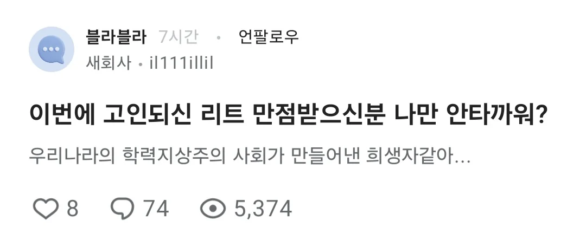
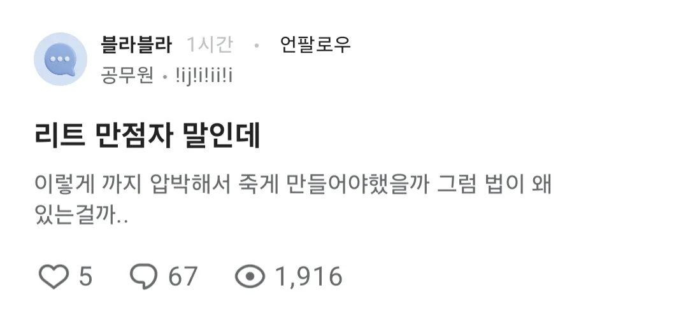

설명에 앞서,
후술할 개념들은 의학적 진단이나 법률적 위법성 판단처럼
명확한 판정기준과 경계가 확립된 개념이 아님.
이 개념들은 학자들이 공적 담론에서 나타나는 특정한 발언 동기와 행태를 설명하고 비판하기 위해 제시한 것들임.
1. 도덕적 과시(Moral Grandstanding), Tosi, J., Warmke, B.(2020)
도덕적 발언을 통해 타인에게 자신이 도덕적으로 뛰어난 사람이라는 인정을 얻으려는 행위.
예를 들면
- 흉악범을 비난하는 사람들에게 "저 사람도 그렇게 될 수 밖에 없었던 아픔이 있었겠죠"라고 말함.
- 범죄자의 죽음에 분노하거나 냉담한 사람들(사회)을 오히려 비인간적인 사람(사회) 취급함.
- 자신은 사회적 통념이나 대중의 분노를 뛰어넘어 인간을 이해하는 사람이라는 태도를 취함.
핵심은 연민 자체가 아니라 연민을 자신의 도덕적 지위를 높이는 수단으로 사용하는 것에 있음.
2. 미덕 과시(Virture Signaling), Bartholomew, J.(2015)
자신이 선량하고 윤리적인 사람이라는 사실을 타인에게 보여주려는 행동
도덕적 과시와 유사하나, 미덕 과시는 자신의 가치관이나 선함을 드러내는 행위에 좀더 초점을 맞춤
예를 들어 "모두가 그 사람을 욕할 때 나는 그의 아픔을 생각했다"는 발언이
실제로는 범죄자에 대한 관심보다 자신의 특별한 공감 능력을 보여주는데 목적이 있다면 미덕과시 개념에 더 가까움.
3. 도덕적 자기애(Moral Narcissism), André Green (1969)
자신이 다른 사람보다 도덕적으로 성숙하고, 관대하며, 공감 능력이 뛰어나다는 자기상에 집착하는 태도
이러한 태도에서는 다음과 같은 심리가 작용함
- 도덕적 차별화 : 남들이 비난하는 사람을 이해하는 자신은 특별하다고 생각함
- 자기 이미지 강화 : 타인에 대한 연민을 통해 스스로 선량한 인간이라는 만족감을 얻음
- 도덕적 우월감 : 범죄자를 비난하는 사람들을 감정적이거나 수준 낮은 사람으로 여김
4. 선택적 공감(Selective Empathy) 또는 부적절하게 배분된 공감(Misplaced Empathy)
상기 1~3번의 개념이 '왜 그런 행동을 하는가'라면
4번 개념은 공감이 누구에게 집중되는가를 설명함.
예를 들어 범죄 피해자가 겪은 고통은 거의 언급하지 않으면서 가해자의 불우한 성장 과정에 깊이 몰입하거나
부정행위로 피해를 본 사람은 외면하면서 부정행위가 들통난 당사자의 비극적 결말에 초점을 맞추는 경우.
이러한 공감 불균형은 실제 연민에서 비롯될 수도 있으므로, 반드시 위선이나 자기과시라고 단정할 수는 없음.
종합적으로 정리하면 아래와 같음.
| 개념 | 특징 |
| 도덕적 과시 | 공감을 통해 자신이 도덕적으로 우월함을 드러냄 |
| 미덕 과시 | 착한 사람으로 보이고 싶어 연민을 표현함 |
| 도덕적 자기애 | '관대하고 공감 능력이 뛰어난 나'에 도취됨 |
| 선택적 공감, 공감 불균형 | 피해자보다 가해자의 불행에 집중함 |
범죄자의 죽음을 안타깝게 생각하는 것 자체는 상기한 개념에 해당하지 않음.
잘못에 대한 책임을 인정하면서도 한 인간의 죽음 자체를 비극으로 받아들이는 태도는 모순되지 않고 양립 가능하기 때문임.
다만 그 연민을 근거로 다른 사람들의 분노를 폄하하거나, 자신이 그들보다 더 성숙하고 인간적이라는 우월감을 드러내면
상기한 개념들에 가까움.


위가 그 사례들임.
단순히 범죄자의 사망 사실을 안타까워하는데서 그치지 않고
논란의 당사자가 사망한 후, 그 죽음에 대한 사회적 책임을 강조하고 있음.

반면 이 경우는 앞서 사례와 비교할 때 도덕적 과시 성향이 상대적으로 약하고
개인적 연민이 중점으로 드러남.
물론 앞서 설명한 개념들은 자신의 도덕적 지위나 우월성을 드러내려는 '동기'와 관련된 개념이므로
게시글만으로 작성자가 실제로 도덕적 우월감을 느끼기 위해 작성했다고 확정할 수는 없음.
그러나 타인의 내면 동기를 확정할 수 없다고 해서 외부로 드러난 표현 방식에 대한 비판까지 불가능해지지는 않음.
1. 저 사람은 도덕적으로 우월해 보이려고 저런 글을 썼다. < 는 틀린 주장이지만
2. 저 글은 자신의 연민을 도덕적으로 우월한 태도로 제시하면서 다른 사람들을 비도덕적 위치에 놓는 방식으로 쓰였다. < 는 올바른 비판임.
이는 실제로 드러난 표현과 논증구조에 대한 평가이므로, 이 평가에 대한 옳고그름을 따질지언정 이러한 평가가 불가하다고 말할 수는 없음.
따라서, 만약 비슷한 글을 썼거나 생각을 하고 있지만
'난 도덕적 과시하는거 아닌데? 진짜 사람 죽은게 안타까운건데?' 하는 사람이 있다면
그 생각을 표현할 때 '자신의 연민을 도덕적으로 우월한 태도로 제시하면서 다른 사람들을 비도덕적 위치에 놓는 방식'으로 쓰지 않도록 주의해야 하며,
그렇지 못해 비판받는다면, 사람들(사회)가 잘못된게 아님.
글을 개떡 같이 쓴거지.
지랄임ㅋㅋ
개중에는 법이라는 사회적장치가 있는데 이런식의 공개처형, 마녀사냥 인민재판식이 옳은가에 대한 생각도 있을거고, 리트냥이의 행동에 대한 원인, 배경이 궁굼한 사람도 있을텐데 걍 도덕적우월로 퉁치는게 맞냐?ㅋㅋ